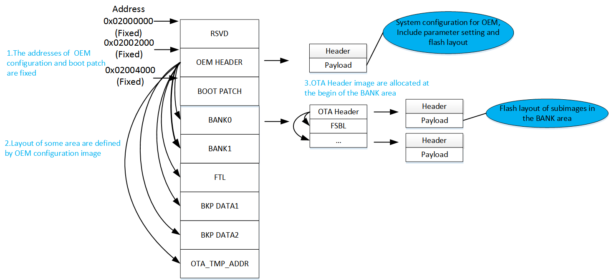

Flash User Guide
V1.5
2023/07/14
Revision History
| Version | Date | Description |
| V1.0.0.0 | 2022/10/26 | Stable release |
| V1.0.0.1 | 2023/03/28 | Update the document content |
| V1.0.0.2 | 2023/04/24 | Update picture size |
| V1.0.0.3 | 2023/04/25 | Update Bring New Flash Layout into Effect |
| V1.4 | 2023/05/31 | Change version number to 2 digits |
| V1.5 | 2023/07/14 | Support to update address of vp data |
Contents
Table List
Figure List
Glossary
| Terms | Definitions |
| FTL | Flash Transport Layer |
| GC | Garbage Collection |
| SPIC | SPI Flash Controller |
| MCM | Mutli-Chip Module |
| SoC | System on Chip |
| BP | Block Protect |
| PI | Position Independent |
1 Introduction
Flash is non-volatile storage. Compare to RAM, which could be written or read directly, flash must be empty or erased before being written. Flash supports at least 100K Program-Erase cycles. And flash can develop bad blocks when the same blocks are erased frequently.
This document shows you how to use Flash with the following topics:
- Flash basic operations
- Flash Layout
- Introduce the layout in flash, which could prevent misuse.
- Introduce how to adjust the flash layout.
- Flash section
- Help user to place data/functions in the different areas.
- Flash translation layer
- Introduce how to use the FTL, which is designed for lightweight dynamical parameter storage.
- External Flash
- Introduce the external Flash from the architecture perspective to the application level.
It is recommended to use flash translation layer(FTL) rather than flash driver for user data storage. If you really need to operate flash directly, APIs with the "fmc_" prefix can be used.
External flash is supported. Multiple choices are available for basic functions like single-mode read, write and erase. However, the flash driver also provides some advanced functions. For example, quad mode, deep power-down, and flash block protection. These functions aren't supported for all flash, therefore, Realtek can provide the Approved Vendor List if needed.
2 Basic Operations
There are three basic operations for flash - read, write, and erase. Flash export these functions with task-safe. This means that all flash basic operations can not be executed at the same time. That's because there is only one resource (flash) and only one path (flash controller) to access it. This helps prevent multiple tasks or interrupts from destroying the atomicity of the SPIC command sequence.
- bool fmc_flash_nor_read(uint32_t addr, void *data, uint32_t len);
- Reads data from flash through user mode. Users could specify the data length to be read out.
- bool fmc_flash_nor_auto_dma_read(uint32_t src, uint32_t dst, uint32_t len, FMC_FLASH_NOR_ASYNC_CB cb);
- If user needs to read a large amount of data(like 1k Bytes), This API is recommended. Because DMA read is faster than fmc_flash_nor_read().
- bool fmc_flash_nor_write(uint32_t addr, void *data, uint32_t len);
- Writes data to flash through user mode. Users could specify the data length to be written.
- Notice: fmc_flash_nor_write() modify the flash data through SPIC rather than the bus command, so this operation would not affect the data in the Cache. In this case, auto_read would return the old data in the Cache. The user could flush the Cache or use fmc_flash_nor_read() to get the correct data after fmc_flash_nor_write().
- bool fmc_flash_nor_erase(uint32_t addr, FMC_FLASH_NOR_ERASE_MODE mode);
- Supports 3 erase types (FMC_FLASH_NOR_ERASE_MODE), FMC_FLASH_NOR_ERASE_CHIP (erase whole chip), FMC_FLASH_NOR_ERASE_SECTOR (4K Bytes) and FMC_FLASH_NOR_ERASE_BLOCK (64K Bytes).
3 Flash Layout
In order to use flash more conveniently and prevent misuse, Flash layout is introduced.
3.1 RTL87X3E Flash Layout
RTL87X3E has a two-layer flash layout which indicates the start address and max size of images in flash:
- The configurations of system config image and Boot Patch are fixed in the ROM, which can't be changed.
- The configurations of PLATFORM_EXT, LOWERSTACK_EXT and UPPERSTACK are fixed when the SDK release.
- The system config image and Boot Patch Header record the layout of high layer images(except images in BANKx).
- The OTA Header fixed at beginning of the BANKx area defines the layout of images in the same BANKx(low layer). The address of "OTA Bank0" in the "High Level Type" is the same with the address of Bank0 OTA Header in the "OTA File Type". And the size of "OTA Bank0" in the "High Level Type" is the total space size of the bank0 images in the "OTA File Type". It's the same with bank1.
The high layer illustration of flash layout is shown in Figure 3-1.
Figure 3-1 RTL87X3E High Layer Illustration of Flash Layout
Note:
- The BKP_DATA sections are reserved.
- After the flash map is modified, please make sure to regenerate the related images.
- The flash layout of all images should not overlap. And the flash layout of the high level regions should not overlap. The flash layout size of the image should be larger than the image size, and it's suggested to be aligned by flash sector size(0x1000 bytes). If two images share one flash sector, these two images should download together for the minimum flash erasure size is flash sector size.
Here take 4M flash map as an example to show the detailed description of the flash layout in Figure 3-2. Similarly, the other flash layout can be described according to its corresponding flash_map.h.
Figure 3-2 RTL87X3E Flash Layout Config Sample
3.2 RTL87X3D Flash Layout
RTL87X3D has a two-layer flash layout which indicates the start address and max size of images in flash:
- The configurations of system config image and Boot Patch are fixed in ROM, which can't be changed.
- The system config image includes the layout of high layer images(except images in BANKx).
- The OTA Header fixed at beginning of the BANKx area defines the layout of images in the same BANKx(low layer). The address of "OTA Bank0" in the "High Level Type" is the same with the address of Bank0 OTA Header in the "OTA File Type". And the size of "OTA Bank0" in the "High Level Type" is the total space size of the bank0 images in the "OTA File Type". It's the same with bank1.
The high layer illustration of flash layout is shown in Figure 3-3.

Figure 3-3 RTL87X3D High Layer Illustration of Flash Layout
Note:
- The BKP_DATA sections are reserved.
- After the flash map is modified, please make sure to regenerate the related images.
- The flash layout of all images should not overlap. And the flash layout of the high level regions should not overlap. The flash layout size of the image should be larger than the image size, and it's suggested to be aligned by flash sector size(0x1000 bytes). If two images share one flash sector, these two images should download together for the minimum flash erasure size is flash sector size.
Here take 16M flash map as an example to show the detailed description of the flash layout in Figure 3-4. Similarly, the other flash layout can be described according to its corresponding flash_map.h.
Figure 3-4 RTL87X3D Flash Layout Config Sample
3.3 How to configure flash layout
Flash Map Generator in the MPPGTool is designed to generate flash_map.ini and flash_map.h which could determine the flash layout. The flash_map.ini would be used by MPPGTool and MCUConfig Tool.
- To generate the flash_map.ini by 'Flash Map Generator', user should open the MPPGTool first, as shown in Figure 3-5.
Figure 3-5 Flash Map Generator
- Configure the whole flash layout in the 'High Level Type' list and configure the layout for bank0/bank1 in 'OTA File Type' list after selecting 'Flash Size' combo box. Multi-image header size is provided in 'Image Header Size' combo box.'Set BP Size to Front' combo box is to set which area of the flash the BP level protects for.Notice that items which 'write enable' is selected 'RW' should be placed out of BP size. You can also import an existing flash map.ini by clicking the 'Import' button and then modify layout base on it. At last, you can click the 'Generate' button to generate a new flash map.ini. Please refer to Figure 3-6 and Figure 3-7.
Figure 3-6 RTL87X3E Configure Flash Map
Figure 3-7 RTL87X3D Configure Flash Map
Note: Please refer to the MPPG Tool Chain User Guide in the tool\MPPGTool directory for details.
3.4 Bring New Flash Layout into Effect
User can adjust the flash layout in the flash_map.ini and flash_map.h through the "Flash Map Generator" in the MPPGTool under the "Tool" menu. But there are some constraints for the flash layout adjusting.
- The image address and size are suggested to be aligned by 0x1000 bytes for the minimum size for flash erase is flash sector size. If there are two images in one flash sector, these two images should be updated together.
- Not all image layout can be adjusted. There are some constraints and restrictions for the images, refer to 3.4.1 Constraints and restrictions brief.
3.4.1 Constraints and restrictions brief
Flash layout for images can be adjusted under some constraints and restrictions according by the image types. Images can be divided into the following types:
- Images of fixed address in the flash layout
RTL87x3e : boot patch image, lowerstack ext image, platform ext image, upperstack image.
RTL87x3d : boot patch image.
The flash address for these images can't be changed.
- Patch code images
RTL87x3e: fsbl image, sys patch image, stack patch image.
RTL87x3d: fsbl image, rom patch image, stack patch image.
When these images are released with position independent attribute, changing the flash layout for these images just needs to update the content of these images through the tool update_images_by_flash_map.exe under the directory of sdk\tool\Gadgets\update_images_by_flash_map. All the patch images in the release package with this user guide in the sdk document support position independent. So all the patch code images in the later document represent images that support the position independent attribute.
- App code image
App image is compiled related with the app flash address in the flash layout, and it should be recompiled with the new flash layout. The FTL is not image, and if the FTL address or size is changed, app image should be recompiled with the new flash map, please refer to 5.4 FTL POOL.
- System config image
The high level flash layout configuration about OTA bank0, OTA bank1, backup data and OTA tmp are placed in the system config image, so if the address or size of OTA bank0, OTA bank1, backup data or OTA tmp are changed, the system config image should be updated through MCUConfig tool with new flash map. If the address and size for OTA bank0, OTA bank1, backup data and OTA tmp are not changed, only the addrees or map for the images in the bank are changed, the system config image doesn't need to be updated. For the ftl layout, please refer to 5.4 FTL POOL. If the system config image can't be updated through the OTA upgrade procedure, all the high level flash layout can't be modified again.
- OTA header image
All the flash layout information for the images in the bank are placed in the OTA header image for each bank. If the flash layout for the bank images are changed, the OTA header image should be updated through MPPGTool with the new flash map. If the address of OTA header image in bank0 or bank1 is changed, please keep the address of OTA Bank0 or OTA Bank1 in the high level same with it.
- VP data image for RTL87x3e
The flash layout information for VP data image on the RTL87x3e is related with storage partition in the app code image. If the flash layout for VP data image is changed, the app code image should be recompiled with new flash map and updated on the flash.
- Other images
RTL87x3e : dsp sys image, dsp app image, dsp data image, app config data image, ext image0~3.
RTL87x3d: dsp sys image, dsp app image, dsp data image, app config data image, ext image0~3.
For RTL87x3e, ext image0 is usually used as anc config data image.
For RTL87x3d, ext image0 is usually used as anc config data image, ext image1 is usually used as dsp2 system image, ext image2 is used as ext dsp config image, and ext image3 is used as ADSP app image.
The flash layout for these images can be adjusted without updating the content of these images.
User should update images according to the actual flash layout adjustment situation:
1) If the high layer flash layout configuration about OTA bank0, OTA bank1, backup data and OTA tmp are not changed, and also the flash layout for fsbl/sys patch/rom patch/stack patch are not changed, only the flash layout for app image, dsp related images, app config image or ext image0~3 are changed, user needs to recompile the app image with new flash layout, please refer to 3.4.5 recompile app image, and update the OTA header image, please refer to 3.4.3 update OTA header image.
2) If the high layer flash layout configuration about OTA bank0, OTA bank1, backup data and OTA tmp are changed, user need to update the system config image through MCU Config Tool, please refer to 3.4.2 update system config image.
3) If the flash layout for fsbl/sys patch/rom patch/stack patch are not changed, but the flash layout for app image, dsp related images, app config image or ext image0~3 are changed, user need to recompile the app image with new flash layout, please refer to 3.4.5 recompile app image, and update OTA header image, please refer to 3.4.3 update OTA header image.
4) If the flash layout for fsbl/sys patch/rom patch/stack patch are changed, user can update the content of these images by the tool update_images_by_flash_map.exe without recompiling, please refer to 3.4.4 update image content by flash map.
So the OTA header image should be updated by referring to 3.4.3 update OTA header image when the image layout in the bank is changed, and the system config image should be updated by referring to 3.4.2 update system config image when the high layer flash layout is changed, and the flash layout for fsb/sys patch/rom patch/statck patch can be changed by updating the content with the tool update_images_by_flash_map.exe by referring to 3.4.4 update image content by flash map. And app image need to be recompiled with new flash map by referring to 3.4.5 recompile app image if the flash layout for app image is changed.
3.4.2 update system config image
If the high layer flash layout configuration about OTA bank0, OTA bank1, backup data and OTA tmp are changed, the system config image should be updated through MCUConfig Tool.
Open MCUConfig Tool and switch to the "System Configuration" tab, scroll down to the "OEM Header Setting" group, and then click the "Import flash_map.ini" button to load the new flash map. Then a new system config image will be generated. Please refer to Figure 3-8.
Figure 3-8 Change Flash Map in System Config
3.4.3 update OTA header image
If the image layout in the bank is changed, OTA header image should be updated through MPPGTool.
Open MPPGTool:
- Click the menu Tool -> Generate OTA Header.
- Click the "Load Flash Layout" button to load the new flash map.ini.
- Select OTA bank "Bank0" or "Bank1".
- Set the OTA image version. The OTA Image version is used for bank switch.
- Set the RSA key through "Load RSA Key" button.
- Click the "Generate" button to generate the OTA Header with the new flash layout. See Figure 3-9.
Figure 3-9 Change Flash Map in OTA Header
3.4.4 update image content by flash map
All fsbl/sys patch/rom patch/stack patch images are compiled with position independent attribute in the sdk package with this user guide in the sdk document, the image content can be updated by the tool update_images_by_flash_map.exe with the new flash map without recompiling.
It's suggested to copy related files into a new work directory.
- Collect the images(fsbl/sys patch/stack patch/rom patch) adjusted by flash layout adjusted according to bank. If there's only one bank, take the bank type as bank0.
- Copy update_images_by_flash_map.exe under the sdk\tool\Gadgets\update_images_by_flash_map to the new work directory.
- If the images are needed to be signed by rsa private key on the secure device, user can copy the rsa private key to the new work directory, and the rsa signature can be updated by the tool update_images_by_flash_map.exe. Of course, all images can be updated the rsa signature by the resign tool under sdk\tool\Gadgets\resign_tool.
Run the command to update the images by bank,specify the bank type by "--bank_type 0" or "--bank_type 1", specify the out directory through "-o out_directory_path" and specify the new flash_map.ini by "--flash_map_ini". Use "-d update_images_path" to update the images under the directory of update_images_path, and use "-f update_image_path" to update the specified image file.
Take bank0 images as example, user can update image content for bank0 with new flash_map.ini by the following command line.
- Update images in bank0 under the directory as Figure 3-10.
update_images_by_flash_map.exe --flash_map_ini NEW_FLASH_MAP_INI_PATH -d UPDATE_IMG_DIR_FOR_BAMK0 --bank_type 0 -o OUT_DIRECTORY
Figure 3-10 update bank0 images under the directory by flash map
- Update the specified single image in bank0 as Figure 3-11.
update_images_by_flash_map.exe --flash_map_ini NEW_FLASH_MAP_INI_PATH -f UPDATE_IMG_FILE_PATH --bank_type 0 -o OUT_DIRECTORY
Figure 3-11 update bank0 single image by flash map
For bank1 images, use "--bank_type 1" in the command line:
- Update images in bank1 under the directory as Figure 3-12.
update_images_by_flash_map.exe --flash_map_ini NEW_FLASH_MAP_INI_PATH -d UPDATE_IMG_DIR_FOR_BAMK1 --bank_type 1 -o OUT_DIRECTORY
Figure 3-12 update bank1 images under the directory by flash map
- Update the specified single image in bank1 as Figure 3-13.
update_images_by_flash_map.exe --flash_map_ini NEW_FLASH_MAP_INI_PATH -f UPDATE_IMG_FILE_PATH --bank_type 1 -o OUT_DIRECTORY
Figure 3-13 update bank1 single image by flash map
3.4.5 recompile app image
If the image layout for app is changed, app image should be recompiled.
- Copy the new flash_map.h and flash_map.ini to sdk\bin\flash_map_config to replace the old one.
- Recompile the app project to generate an app image with the new flash layout.
3.4.6 download images with new flash layout
The flash layout modification would take effect after downloading the images into flash using MPPGTool with new flash_map.ini. Please pay attention to the flash_map.ini setting and bank type setting on the UI. For secure device, please pay attention to the image resign operation.
3.5 Generate ext image command line
prepend_header.exe and md5.exe under sdk\tool\Gadgets will be used.
Use prepend_header.exe to add the image header for ext image payload ext_imageN.bin.
The output file name is the same as the input file name ext_imageN.bin.
ext image0: prepend_header.exe /ext_image0 ext_image0.bin /ic_type IC_TYPE
ext image1: prepend_header.exe /ext_image1 ext_image1.bin /ic_type IC_TYPE
ext image2: prepend_header.exe /ext_image2 ext_image2.bin /ic_type IC_TYPE
ext image3: prepend_header.exe /ext_image3 ext_image3.bin /ic_type IC_TYPE
IC_TYPE should be specified according to the ic type, optional 87x3E, 87x3D.
Add mp header for ext image through mp.ini.
The output file name will append "_MP" after the input file name ext_imageN_MP.bin.
; This is a config file mp.ini used by prepend_header tool to generate MP header for a given image.
;
; The following sections are mandatory: BinID, Version, PartNumber.
;
; Note that MP header is a 512 bytes fixed data area, pay attention to the long strings you have
; written and ensure they are not out of bound of the header.
[MandatoryInfo]
; Image type of current binary file.
BinID=ID_EXT_IMAGE1
; Version of current binary file. Range: 0.0.0.0 ~ 255.255.255.255
Version=1.0.0.0
; Part number of current image, ASCII type, 32 bytes maximum.
PartNumber=RTL87x3E
[OptionalInfo]
; Optional. Fill the required version number in specific field if specific image is needed.
; Item will be ignored if the format of the value is wrong or the value does not exist.
DependOnSocvConfig =
DependOnOemConfig =
DependOnFactoryMp =
DependOnFsbl =
DependOnOtaHeader =
DependOnPatch =
DependOnApp =
DependOnAppData =
DependOnAppDataTone =
DependOnAppDataVp =
DependOnAppDspParam =
DependOnDspSys =
DependOnDspPatch =
DependOnDspScenario1 =
DependOnDspScenario2 =
; Optional ASCII type comment string, 255 bytes maximum.
Comment=
; Optional ASCII type author information string, 255 bytes maximum.
Author=
; Optional ASCII type date and time string, 255 bytes maximum.
Date=
; Optional bin header format revision.
Revision=0x01
BinID for ext image in the mp.ini are defined as follows, please set the BinID according to the image type. See Table 3-1.
Table 3-1 The BinID of ext image type
| ext image type | BinID in mp.ini |
| ext_image0 | ID_EXT_IMAGE0 |
| ext_image1 | ID_EXT_IMAGE1 |
| ext_image2 | ID_EXT_IMAGE2 |
| ext_image3 | ID_EXT_IMAGE3 |
add mp header command lines:
ext image0: prepend_header.exe /ext_image0 ext_image0.bin /mp_ini mp_ext_img0.ini /ic_type IC_TYPE
ext image1: prepend_header.exe /ext_image1 ext_image1.bin /mp_ini mp_ext_img1.ini /ic_type IC_TYPE
ext image2: prepend_header.exe /ext_image2 ext_image2.bin /mp_ini mp_ext_img2.ini /ic_type IC_TYPE
ext image3: prepend_header.exe /ext_image3 ext_image3.bin /mp_ini mp_ext_img3.ini /ic_type IC_TYPE
IC_TYPE should be specified according to the ic type, optional 87x3E, 87x3D.
- Add md5 data in the image file name for ext_imageN_MP.bin.
The output file name will be ext_imageN_MP-MD5Number.bin.
md5.exe ext_imageN_MP.bin
4 Section Usage
Functions are placed on flash by default. Section is provided for users to move them to the ram area.
#define FLASH_HEADER __attribute__((section(".flash.header"))) __attribute__((used))
#define FLASH_HEADER_EXT __attribute__((section(".flash.header_ext"))) __attribute__((used))
#define RAM_TEXT_SECTION __attribute__((section(".ram_text")))
#define SHM_DATA_SECTION __attribute__((section(".shm.data")))
#define ISR_TEXT_SECTION __attribute__((section(".isr.text")))
- FLASH_HEADER & FLASH_HEADER_EXT
- FLASH_HEADER & FLASH_HEADER_EXT are provided for image header.
- RAM_TEXT_SECTION
- Functions with the RAM_TEXT_SECTION prefix will be placed in Ram.
{
bool ret = false;
{
}
if (ret == false)
{
}
return ret;
}
- SHM_DATA_SECTION
- Functions with the SHM_DATA_SECTION prefix will be placed in DSP share memory. Please make sure DSP Share memory is ready first.
- ISR_TEXT_SECTION
- ISR functions need to place on RAM. Because if the flash is erasing, XIP would run away. Then a hard fault will appear. ISR_TEXT_SECTION is provided for the user to run XIP in ISR. But there is a limit: user should make sure that the ISR handler has added this Prefix.
{
}
uint32_t gpio_pin,
{
if (callback)
{
callback(hal_gpio_sw_context.
context[gpio_num]);
}
else
{
}
}
If users add ISR_TEXT_SECTION in GPIOA0_Handler() above, an XIP code like (hal_gpio_sw_context.gpio_a0_callback) could be used. And if the ram is enough, users could put the ISR_TEXT_SECTION to ram in the .sct file without modifying any code.
Put functions with ISR_TEXT_SECTION prefix on Flash:
FLASH_TEXT +0;
{
startup_rtl87x3e.o (
RESET, +First)
#if (FEATURE_RAM_CODE == 0)
* (+RO)
#endif
* (.isr.text)
}
Move functions with ISR_TEXT_SECTION prefix to RAM:
RAM_TEXT APP_BUFFER_ON_ADR APP_BUFFER_ON_SIZE
{
#if FEATURE_RAM_CODE
.ANY (+RO)
#endif
* (.ram_text)
* (.isr.text)
}
5 Flash Transport Layer
flash transport layer(FTL) is used as an abstraction layer for the user to read&write data on flash. The location of FTL POOL in flash can be found in FLASH_LAYOUT.
The purpose of FTL is to make it simpler to change the data stored in Flash:
Every time the user wants to change the data on flash, the flash needs to be erased first. If flash is modified frequently, a lot of time will be wasted on erasing. FTL replaces the physical address with the logical address to access flash. FTL records data and its logical address on flash. If a user wants to modify the data, FTL writes a new record rather than modifying the old record. In this way, users do not need to erase flash. And when the FTL detects that there is not enough space to write a new record, it will clear some expired records. This process is called Garbage Collection.
So FTL is designed for lightweight dynamical parameter storage, heavyweight and read-only data should not use it.
FTL uses modules to distinguish different data. FTL has a default module to ensure basic functionality. Users can save data in the default module, or apply for a new module.
5.1 Default FTL Module
The data in the default module can be divided into the following regions. FTL layout is shown in Figure 5-1:
Figure 5-1 Default FTL module Layout
- Local stack information storage space
- range: 0x0000 - 0x003b
- This region is used to store local stack information including device name, device appearance, and lock IRK. Please refer to GAPStorage_Stack for more information.
- Legacy key storage space
- range: 0x003c - (0x50 + max_legacy_paired_device*24 - 1)
- This region is used to store legacy key information. Please refer to GAPStorage_LegacyKey for more information.
- max_legacy_paired_device: It can be configured by MCU Configure Tool, and the default value is 8.
- LE key storage space
- range: (0x50 + max_legacy_paired_device*24) - (0x50 + max_legacy_paired_device*24 + 0x14 + max_le_paired_device*(148 + 4*gatt_server_ccc_bits_count) - 1)
- This region is used to store LE key information. Please refer to GAPStorage_LeKey for more information.
- max_le_paired_device: It can be configured by MCU Configure Tool, and the default value is 4.
- gatt_server_ccc_bits_count: It can be configured by MCU Configure Tool, and the default value is 16.
- Reserved space
- range: (0x50 + max_legacy_paired_device*24 + 0x14 + max_le_paired_device*(148 + 4*gatt_server_ccc_bits_count)) - 0xA17
- This region is reserved space. Because the variables max_legacy_paired_device and max_le_paired_device are configurable, this region can be used to expand Legacy key storage space and LE key storage space.
- When variables max_legacy_paired_device and max_le_paired_device are determined, this region can be used by APP.
- ftl module info space
- range: 0x0A18 - 0x0A5B
- This region records the FTL ext module's info.
- GFPS finder space
- range: 0x0A5C - 0x0A8B
- This region can be used by APP to store GFPS Finder information.
- GFPS storage space
- range: 0x0A8C - 0x0BFF
- This region can be used by APP to store GFPS information.
- APP storage space
- range: 0x0C00 - the maximum size of the default FTL module
- This region can be used by APP to store information.
The maximum size of the default module should be set by the interface: ftl_pool_init(). An easy way to calculate the flash area size is (logical_size * 2). FTL uses mapping_table to save time, default FTL module takes nearly (logical_size / 2) sram.
5.2 FTL APIs of default FTL module
ftl_save_to_storage() function is used by APP to save data to Default FTL Module.
ftl_load_from_storage() function is used by APP to load data from Default FTL Module. The offset can be used starting from 0x0C00 when APP use ftl_save_to_storage() and ftl_load_from_storage().
Notice: The offset and the size in ftl_save_to_storage()& ftl_load_from_storage() must be 4 Bytes aligned.
A brief demo:
{
...
{
{
4);
}
}
...
}
{
...
}
5.3 How to add a FTL module
FTL pool support up to 7 modules. The default FTL module takes up one.
Use ftl_init_module() to malloc a new FTL module. The malloc_size is a logical size.
Before adding a new FTL module. Please make sure the flash size of the FTL POOL is big enough: if (((block_len + 4) % 8) == 0), new module takes up (malloc_size / block_len *(block_len + 4)) flash area. otherwise takes up (malloc_size / block_len *(block_len + 8)) flash area. And the mapping_table for this new FTL module takes (malloc_size / block_len * 2) sram.
Notice:
- 1.The first 4Bytes of module_name should be unique.
- 2.block_len must be an integer multiple of 4 and cannot exceed 128.
More info can be found in ftl_init_module().
Ext FTL module use ftl_save_to_module() / ftl_load_from_module() to save/load data. The block_len in ftl_init_module() is the smallest unit for reading and writing data in the current FTL module. Application may need additional operation about the read/write data if necessary.
Demo:
#define EQ_EXT_FTL_PARTITION_NAME "EQ_FTL"
#define EQ_SIZE (0x2800)
#define EQ_EXT_FTL_BLOCK_LEN 68
{
return ftl_init_module(EQ_EXT_FTL_PARTITION_NAME, EQ_SIZE, EQ_EXT_FTL_BLOCK_LEN);
}
uint32_t len, void *buf)
{
}
uint32_t len, void *buf)
{
}
void eq_ext_ftl_storage_init(void)
{
{
{
.
name = EQ_EXT_FTL_PARTITION_NAME,
.init = eq_ext_ftl_partition_init,
.read = eq_ext_ftl_partition_read,
.write = eq_ext_ftl_partition_write,
},
};
}
5.4 FTL POOL
All FTL modules save data in the same flash area(FTL POOL), which can be found in flash_map.h App uses the flash_map.h to define FTL pool info. The user can modify it directly, or use the FlashMapGenerator Tool. So the address and size of the FTL pool are determined by APP and cannot be modified by any other bins or tools.
In principle, the new FTL POOL must include all areas of the old FTL POOL. Otherwise, FTL data would be lost. In these conditions, users need to do Factory Reset.
#define FTL_ADDR 0x021F9000
#define FTL_SIZE 0x00007000 //28K Bytes
5.4.1 How to estimate the min flash size of FTL POOL
- garbage collection
- default FTL module
- takes up (logical_size * 2) flash area
- ext FTL module
- takes up (logical_size / block_len *(block_len + (block_len % 8)? 8: 4)) flash area
The size of the FTL POOL should be larger than the total size above. And must be 4K align.
5.5 FTL cache
FTL has a cache. The user could open the cache by the interface ftl_cache_init(). And the param in ftl_cache_init() is the size of the cache.
After enabling this cache, FTL saves data in the cache area when there is not enough space to write a new record.
- Advantages:
- reduce current write's time cost If there is no space for a new record, FTL needs to do GC. GC call flash write&erase operation, this cost at least 50ms+. So if the current flow is time sensitive, it is suggested to open the cache.
- Disadvantages:
- data loss in an abnormal case Because data is in the cache, not on flash, this data will be lost if power is lost or an abnormal reboot happens.
6 External Flash
Besides the MCM flash embedded in the SoC, most of the Realtek BT SoC would also support additional external flash if the desired Flash size is larger than the embedded one.
The chapter will take RTL8773D as an example to introduce it from the architecture perspective to the application level when the SDK user wants to add more flashes into the system.
Note: The material in this chapter is captured from the latest RTL8773D document for external customers, but this may subject to change. So please refer to the latest ones in case any changes are made.
6.1 System Arch
The system architecture of 87X3D is shown in Figure 6-1.
Figure 6-1 System Arch of RTL87X3D
Picture above is captured from the the system overview of RTL8773D in the data sheet, and there you can clearly tell that SPIC0 is reserved for the MCM flash and there are still 3 SPICs left for external storage connections.
6.2 SPIC
SPIC is designed to transmit/receive data to/from SPI flash memories. Usually to operate on the flash, the user has to set/read registers and transmit serial data to the flash, and the registers would vary on different flashes from different vendors.
As mentioned in the data sheet, the default priority order among all these SPICs is SPIC3>SPIC2>SPIC1. And in the demo code, we by default use SPIC3 for external flash connections as SPIC3 is better for high speed application which requires up to 80MHz and with larger address space up to 256MB.
#if F_APP_EXT_FLASH_SUPPORT
static bool ext_flash_init(void)
{
}
#endif
6.3 Pinmux
Pins for these SPICs are predefined and can not be changed. So once any SPIC is assigned to any external storage usage, the corresponding pins have to be reserved and connected to the external storage. Here is the pinmux setting for SPIC3, and if you want to use any SPIC other than SPIC3, please refer to the datasheet for its pre-allocated pinmux.
All these pins would be automatically initialized to these specified pinmux once the flash is initialized as the Table 6-1.
Table 6-1 Pinmux for external flash
| Pin Name | Function |
| P3_2 | SPIC3_CLK (master only) |
| P3_3 | SPIC3_CSN (master only) |
| P3_4 | SPIC3_SIO0 (master 4 bit mode) |
| P3_5 | SPIC3_SIO1 (master 4 bit mode) |
| P3_6 | SPIC3_SIO2 (master 4 bit mode) |
| P3_7 | SPIC3_SIO3 (master 4 bit mode) |
Note: All these pins are in VDDIO3, so make sure VDDIO3 is powered.
6.4 Flash Address
Once the external storage connects to the SoC via SPIC, the flash address would be allocated, and here is flash space allocated for each SPIC:
#define FMC_MAIN0_ADDR (0x02000000) //for spic0
#define FMC_MAIN0_UNCACHEABLE_ADDR (0x04000000)
#define FMC_MAIN1_ADDR (0x06000000) //for spic1
#define FMC_MAIN1_UNCACHEABLE_ADDR (0x06000000)
#define FMC_MAIN2_ADDR (0x08000000) //for spic2
#define FMC_MAIN2_UNCACHEABLE_ADDR (0x08000000)
#define FMC_MAIN3_ADDR (0x10000000) //for spic3
#define FMC_MAIN3_UNCACHEABLE_ADDR (0x10000000)
#define FMC_MAIN0_SIZE ( 32 * 1024 * 1024)
#define FMC_MAIN1_SIZE ( 32 * 1024 * 1024)
#define FMC_MAIN2_SIZE ( 8 * 1024 * 1024)
#define FMC_MAIN3_SIZE (256 * 1024 * 1024)
As you can tell from the definition above, we have cache address and non-cache address for each SPIC, but they are the same except SPIC0. So it means only SPIC0 has cache enabled for the MCM flash and for now none of the external storage has the cache.
Flash address also could help specify which SPIC you want to access. Here are the explaination with the example code:
- read access MCM flash via cache which would be more efficient if cache is hit
- write access MCM flash without cache
- read access SPIC3 flash
Note:
- Whether it supports cache in other BT SoC series, and how it supports cache, please refer to their datasheet
- Cache is not available when access other SPICs
- DMA could be used as well to access flash to reduce the CPU loading
6.5 Conclusion
To summarize, to support external flash, you can
- Reserve SPIC pre-allocate pins
- Call initialize API above
- Call flash API with specified address which is in SPIC3 arrange to access external flash